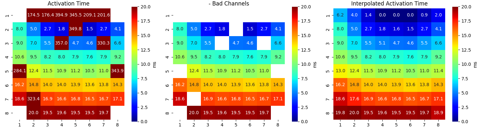
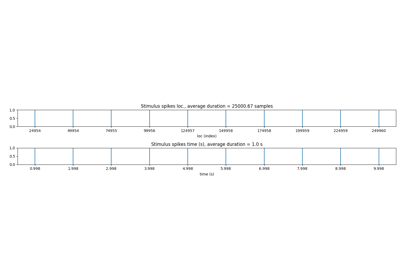

Note
Go to the end to download the full example code or to run this example in your browser via JupyterLite or Binder
MEA: Minimal Setting: Example¶
In this example code, we demonstrate analysis of MEA Recording, with minimal settings, using signle line that includes all the 13 steps
Read HDF File
Stim loc
Align Cycles
Average Cycles/Select one
Activation Time
Activation & Repolarisation Time
APD computation
Extract EGM
EGM Feature Extraction
BAD Channels
Feature Matrix
Interpolation
Conduction Velocity
#sp.mea
import numpy as np
import matplotlib.pyplot as plt
import os, requests
import spkit as sp
print('spkit-version: ',sp.__version__)
# Download Sample file if not done already
file_name= 'MEA_Sample_North_1000mV_1Hz.h5'
if not(os.path.exists(file_name)):
path = 'https://spkit.github.io/data_samples/files/MEA_Sample_North_1000mV_1Hz.h5'
req = requests.get(path)
with open(file_name, 'wb') as f:
f.write(req.content)
spkit-version: 0.0.9.7
Features_df,Features_ch,Features_mat, Data = sp.mea.analyse_mea_file(file_name,stim_fhz=1)


- 


----------------------------------------------------------------------------------------------------
file name
MEA_Sample_North_1000mV_1Hz.h5
----------------------------------------------------------------------------------------------------
500 ms of duration after stimulus is selected, to change it set 'dur_after_spike'
Reading File...
base key(s) found in file <KeysViewHDF5 ['Data']>
Shape of Signals: (60, 250000)
- #Channels = 60
- Duration (s) = 10.0
Shape: (60, 12450, 9)
Number of EGMs/Cycles per channel = 9
-- Averaged All EGM
EGM Shape : (60, 12450)
----------------------------------------------------------------------------------------------------
Following EGM Features are etracted: ['peak_to_peak', 'egm_duration', 'f_index', 'new_duration', 'energy_mean', 'energy_sd', 'noise_var']
EGM_Feat shape : (60, 7)
Shapes: XE = (60, 250) , AT = (60,) , EGM_F= (60, 7)
----------------------------------------------------------------------------------------------------
BAD CHANNELS
- BASED ON STIM thr = 2
- ch: [21, 31, 43, 41, 51, 61, 71]
- BASED ON Peak-to-Peak volt thr: 5
- ch: [15, 21, 31, 43, 41, 52, 51, 61, 71]
- BASED ON Activation time (ms) range thr: [0, 50]
- ch: [27, 15, 21, 31, 43, 41, 52, 51, 61, 71, 73, 85]
- Manually passed:
- ch: []
GOOD CHANNELS passed:
- ch: []
--------------------------------------------------
Final list of Bad Channels:
- ch: [15, 21, 27, 31, 41, 43, 51, 52, 61, 71, 73, 85]
Final list of Good Channels:
- ch: [47 48 46 45 38 37 28 36 17 26 16 35 25 14 24 34 13 23 12 22 33 32 44 42
53 54 62 63 72 82 83 64 74 84 75 65 86 76 87 77 66 78 67 68 55 56 58 57]
----------------------------------------------------------------------------------------------------
Interpolated Original
CV_mean 26.817 24.965
CV_median 24.969 24.292
CV_sd 5.987 2.459
inv_speed 0.004 0.004
avg_angle -1.693 -1.685
Smooth Plot
With upsampling by 2
Results¶
print(Features_df)
print(Features_ch)
Original Interpolated
at_ms_mean 11.484167 67.361333
at_ms_median 11.06 13.94
at_ms_sd 5.393794 116.845063
peak_to_peak_mean 194.296019 156.026815
peak_to_peak_median 198.877604 170.335079
peak_to_peak_sd 80.811005 105.284933
egm_duration_mean 37.043771 35.840246
egm_duration_median 31.205426 30.812905
egm_duration_sd 20.499696 24.769817
f_index_mean 1.020833 1.266667
f_index_median 1.0 1.0
f_index_sd 0.142826 1.424391
new_duration_mean 38.886978 39.366179
new_duration_median 31.396708 31.099283
new_duration_sd 22.934721 31.052041
energy_mean_mean 634.703597 508.018861
energy_mean_median 528.960827 429.291967
energy_mean_sd 440.939276 468.763144
energy_sd_mean 2331.557953 1865.581011
energy_sd_median 1981.04279 1463.436099
energy_sd_sd 1702.987816 1785.685722
noise_var_mean 4.483589 3.748528
noise_var_median 4.398441 4.078418
noise_var_sd 1.679903 2.1329
cv_cm_s_mean 24.964751 26.143832
cv_cm_s_median 24.292091 24.923668
cv_cm_s_sd 2.458801 4.490185
inv_speed 0.004041 0.003854
avg_angle -1.685121 -1.692971
n_bad_ch 12 0
n_good_ch 48 60
file_name MEA_Sample_North_1000mV_1Hz.h5 MEA_Sample_North_1000mV_1Hz.h5
at_ms peak_to_peak egm_duration f_index new_duration ... energy_sd noise_var cv_cm_s CH_Label Bad_CH
0 16.64 185.024967 32.888097 1.0 32.888097 ... 1738.891824 4.806276 24.994262 47 False
1 19.56 207.645492 29.078587 1.0 29.078587 ... 1965.390988 4.757493 23.972602 48 False
2 13.96 137.696900 45.199420 1.0 45.199420 ... 1313.511807 5.826316 24.300282 46 False
3 10.88 110.208074 37.244166 1.0 37.244166 ... 589.373654 2.835411 23.614175 45 False
4 19.52 194.957333 28.186365 1.0 28.186365 ... 1633.030667 3.361641 26.406259 38 False
5 16.88 146.507319 31.930925 1.0 31.930925 ... 1035.150207 3.791908 25.158138 37 False
6 20.04 284.495890 26.216436 1.0 26.216436 ... 3611.331072 3.189918 28.737474 28 False
7 14.04 220.728300 29.077200 1.0 29.077200 ... 2302.812305 3.838855 25.588377 36 False
8 323.44 9.426356 19.029424 1.0 19.029424 ... 8.203725 2.408528 25.561067 27 True
9 18.60 163.620594 27.617619 1.0 27.617619 ... 1234.744236 2.870040 33.872723 17 False
10 14.84 236.031266 28.412209 1.0 28.412209 ... 2896.596687 4.079189 24.898835 26 False
11 16.16 108.990994 115.117881 1.0 115.117881 ... 807.893237 3.395177 22.627833 16 False
12 11.48 101.917566 22.773716 1.0 22.773716 ... 513.439767 2.768145 23.349423 35 False
13 12.40 46.874862 22.418585 2.0 110.892525 ... 143.344650 1.137642 25.123060 25 False
14 284.08 0.695701 23.789267 2.0 35.323118 ... 0.040085 0.187772 24.775147 15 True
15 10.64 26.462483 33.079279 1.0 33.079279 ... 63.254152 0.801556 30.250936 14 False
16 9.48 105.900375 28.313894 1.0 28.313894 ... 663.290624 1.506374 23.691410 24 False
17 8.24 183.043845 27.251336 1.0 27.251336 ... 2187.811774 4.457476 22.689037 34 False
18 9.00 135.499567 22.598340 1.0 22.598340 ... 1225.741769 4.232107 29.345526 13 False
19 7.00 208.095476 30.768363 1.0 30.768363 ... 1996.694592 5.713667 24.572447 23 False
20 8.04 174.705308 29.125530 1.0 29.125530 ... 1794.933818 2.115191 20.856701 12 False
21 5.00 197.765137 31.110845 1.0 31.110845 ... 1605.567895 2.933420 22.889576 22 False
22 5.48 199.990070 37.185192 1.0 37.185192 ... 2428.124139 4.159148 23.929110 33 False
23 174.48 0.672183 147.479525 12.0 204.713549 ... 0.119499 0.305310 27.257815 21 True
24 2.72 234.087601 30.857447 1.0 30.857447 ... 3941.533424 8.792507 27.295478 32 False
25 176.40 1.220167 21.325327 1.0 21.325327 ... 0.130375 0.271223 29.789960 31 True
26 8.04 267.936098 32.318821 1.0 32.318821 ... 4205.093145 5.288281 24.013662 44 False
27 357.00 1.085440 22.911071 1.0 22.911071 ... 0.123967 0.217650 22.412884 43 True
28 394.88 0.475323 11.002538 1.0 11.002538 ... 0.299669 0.597950 36.126649 41 True
29 1.84 28.585665 92.324811 1.0 92.324811 ... 68.006625 2.563891 27.265852 42 False
30 349.76 2.784590 26.700329 1.0 26.700329 ... 0.403634 0.427144 29.575117 52 True
31 345.48 0.949954 17.314854 1.0 17.314854 ... 0.136271 0.300426 42.650681 51 True
32 4.72 85.242921 42.173367 1.0 42.173367 ... 416.599180 2.618208 22.388949 53 False
33 7.88 154.565858 38.989405 1.0 38.989405 ... 1319.499289 3.854213 21.678996 54 False
34 209.08 0.020953 1.206467 1.0 1.206467 ... 0.198213 0.467681 45.108018 61 True
35 1.48 249.095678 34.198601 1.0 34.198601 ... 3865.931980 5.747313 29.443430 62 False
36 201.60 0.818095 22.494695 2.0 31.005287 ... 0.164918 0.365871 34.893927 71 True
37 4.64 301.713155 31.300006 1.0 31.300006 ... 4548.332537 5.208267 22.831155 63 False
38 2.68 262.489993 35.555927 1.0 35.555927 ... 3845.349801 7.809549 26.468601 72 False
39 4.12 165.964851 37.289210 1.0 37.289210 ... 1321.304302 4.306614 25.849839 82 False
40 330.32 9.289875 9.507392 2.0 31.100453 ... 4.543717 1.983761 25.086544 73 True
41 6.56 286.334120 30.977130 1.0 30.977130 ... 3690.857045 4.709205 25.321557 83 False
42 7.56 247.082172 31.098113 1.0 31.098113 ... 3972.649231 7.058398 23.808972 64 False
43 7.92 354.963382 28.989166 1.0 28.989166 ... 7221.839931 6.985230 24.575674 74 False
44 9.24 48.073097 129.149889 1.0 129.149889 ... 150.594577 6.105692 25.241695 84 False
45 343.92 7.961333 49.552862 2.0 73.763354 ... 5.714858 2.166059 27.084073 85 True
46 10.96 270.760250 29.885907 1.0 29.885907 ... 3957.074664 5.452439 23.681946 75 False
47 10.52 366.615413 28.754012 1.0 28.754012 ... 7866.874997 7.662611 23.166111 65 False
48 14.32 235.104306 35.903772 1.0 35.903772 ... 3289.930349 6.583009 24.173149 86 False
49 13.76 221.883263 34.859990 1.0 34.859990 ... 2237.905717 5.284190 24.283899 76 False
50 17.12 246.211356 30.157142 1.0 30.157142 ... 2985.265406 4.497298 30.173894 87 False
51 16.68 285.388401 26.533913 1.0 26.533913 ... 3509.150114 4.464566 23.511653 77 False
52 13.60 149.778181 36.610816 1.0 36.610816 ... 1060.727601 4.077647 23.481472 66 False
53 19.68 195.988603 30.106471 1.0 30.106471 ... 1688.048984 4.306425 23.215825 78 False
54 16.48 275.228959 31.493410 1.0 31.493410 ... 3944.379419 5.551180 23.807320 67 False
55 19.48 316.971262 28.380379 1.0 28.380379 ... 4342.037972 4.339405 23.325041 68 False
56 11.16 216.102190 32.922939 1.0 32.922939 ... 2337.948079 4.871648 23.137746 55 False
57 13.92 106.317816 52.826650 1.0 52.826650 ... 790.835827 5.137693 24.948501 56 False
58 19.52 143.025948 34.196825 1.0 34.196825 ... 945.021764 3.442592 25.359655 58 False
59 16.76 234.536550 34.652898 1.0 34.652898 ... 2641.059900 5.917260 24.989802 57 False
[60 rows x 11 columns]
Total running time of the script: (0 minutes 7.038 seconds)
Related examples

MEA: Step-wise Analysis: Example
MEA: Step-wise Analysis: Example


Fractional Fourier Transform: FRFT
Fractional Fourier Transform: FRFT